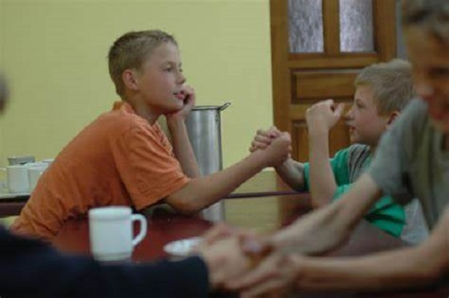
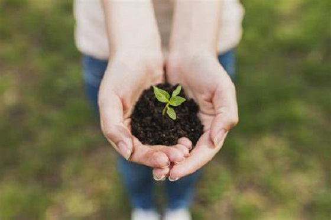
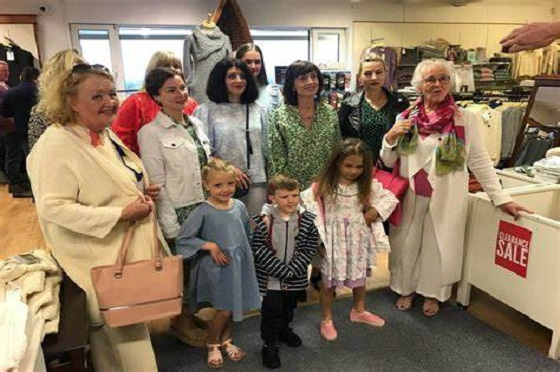
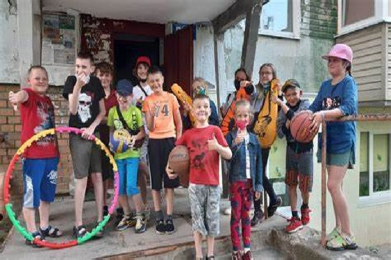
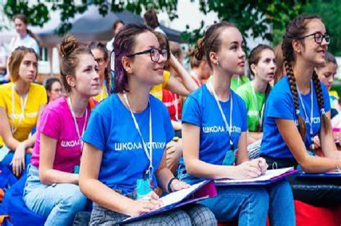
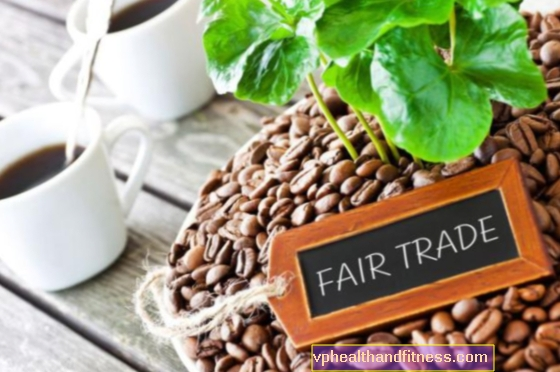
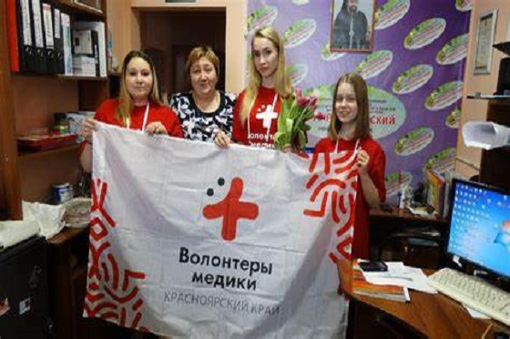
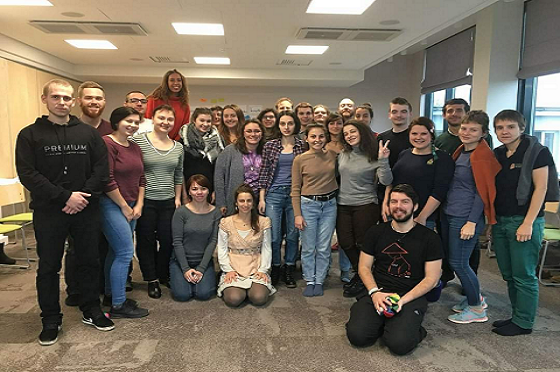

Діяльністю, яку зараз називають волонтерською, люди займалися з давніх часів. Початком сучасного волонтерського руху в західних країнах зазвичай вважають створення Міжнародного комітету Червоного Хреста, яке ініціював 1859 року Жан Анрі Дюнан.Його ідеєю стало - волонтери по всьому світу.
Які є напрямки волонте́рства:
Спільнота
Навколишнє середовище
Культурний
Спорт
Освітні
Чесний торг
Соціальне здоров'я
Міжнародний
Спільнота

Підтримує проекти групи з покращення якості життя людей, які її складають.
Навколишнє середовище

Спрямований на сприяння поліпшенню та збереженню довкілля. Це може включати захист середовища існування як флори, так і фауни.
Культурний

Орієнтований на порятунок цінностей, що виражають емоції, традиції, звичаї, що культивують дух. Це передається поколіннями протягом історії, наприклад, літературі, музиці, театру, архітектурі.
Спорт

Він прагне інтегрувати людей до спільноти, яка хоче брати участь у якійсь рекреаційній діяльності. У багатьох випадках тримайте молодь подалі від споживання заборонених речовин.
Освітній

Орієнтований на програми, що дозволяють грамотність населенню, яке не мало доступу до освіти. Тим самим розвиваючи навички, які дозволять їм продуктивно вбудуватися в суспільство в майбутньому.
Чесний торг

Чия мета - забезпечити існування цін відповідно до роботи та засобів виробництва, що використовуються у виробництві товарів та послуг.
Соціальне здоров'я

З метою розповсюдження інформації, доступності здоров'я людей, які перебувають у ситуації вразливості. Це коли метеорологічна подія позбавила людей домівок і вони не мають доступу до медичних послуг.
Міжнародний

Підтримка імміграції та переселення, щоб їм було місце в суспільстві.